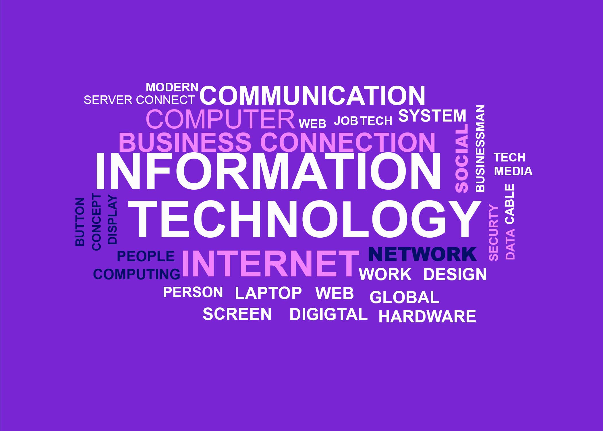

BIT - (Bachelor’s in Information Technology)
Overview
Bachelor of Information Technology (BIT) offers a whole new dimension in the development of Information Systems and the interactions between people and systems. The programme aims to train students to become fully fledged professionals in the field of information technology. It focuses on deep understanding and skill building in software, hardware, networking, data structures, and computer architecture. Graduates become internationally acceptable professionals because of the strength and expertise they gain in information technology, the fastest growing sector of the modern economy.
Career
A Bachelor's in Information Technology (IT) is a four-year undergraduate program designed to provide students with a broad understanding of IT concepts and applications. Core subjects typically include programming, database management, networking, and web development. Students may have the option to specialize in areas such as cybersecurity, data science, or software development. The curriculum often includes mathematics and algorithm courses, along with practical experiences like internships. Emphasis is placed on developing soft skills such as communication and teamwork. Graduates are prepared for various IT careers, including software development, network administration, and cybersecurity. The program aims to equip students with the skills and knowledge needed to thrive in the dynamic field of information technology.
Careers by Area
- Software Development : Software Developer, Web Developer, Mobile App Developer etc.
- Network Administration : Network Administrator, Systems Administrator, Network Security Specialist etc.
- Database Management : Database Administrator (DBA), Data Analyst etc.
- Cybersecurity : Cybersecurity Analyst, Ethical Hacker
- Web Developmemt : Front-end Developer, Back-end Developer, Full Stack Developer etc.
- Data Science : Data Scientist, Data Analyst etc.
- Artificial Intelligence (AI) and Machine Learning : AI Engineer, Machine Learning Engineer etc.
- Cloud Computing : Cloud Architect, DevOps Engineer etc.